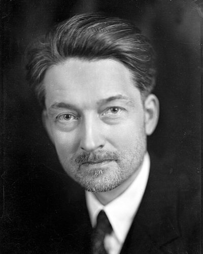

Ideologies / Conservative
What is Christian Democracy?
Christian Democracy is a political ideology in the Conservative family. It grounds democracy and human rights in the Christian view of the person, against both individualism and collectivism. Following Catholic social teaching, decisions belong at the lowest level able to handle them, with family, church and associations standing between the individual and the state. It supports markets tempered by solidarity and a welfare safety net.
The dignity of the person, in a pluralist democracy.
Defined from: Jacques Maritain, Integral Humanism (1936) and Christianity and Democracy (1943)
See how close you are to Christian Democracy Dare a friend to answer as one


Where Christian Democracy stands on 13 axes
Each axis runs from 0 to 100. A score of 50 is the middle. On a classic compass it sits in the Libertarian Right quadrant.
| Axis | Position | Score | In words |
|---|---|---|---|
| EconomyMarket to Planned | 45 | Balanced | |
| OwnershipPrivate to Collective | 30 | Strongly Private | |
| RightsLiberty to Security | 40 | Leans Liberty | |
| GovernmentDemocracy to Autocracy | 15 | Very strongly Democracy | |
| StructureDecentralised to Centralised | 35 | Leans Decentralised | |
| NationInternationalist to Nationalist | 35 | Leans Internationalist | |
| ImmigrationMulticulturalist to Assimilationist | 45 | Balanced | |
| ValuesProgressive to Traditional | 75 | Strongly Traditional | |
| TechnologyAccelerationist to Precautionary | 55 | Balanced | |
| EnvironmentIndustrialist to Environmentalist | 50 | Balanced | |
| ReligionSecular to Religious | 85 | Very strongly Religious | |
| MilitaryPacifist to Militarist | 35 | Leans Pacifist | |
| TradeFree Trade to Protectionist | 35 | Leans Free Trade |
Ideologies closest to Christian Democracy
- Islamic Democracy91% alike
- Neo Calvinism (Sphere Sovereignty)88% alike
- Red Toryism85% alike
- Compassionate Conservatism85% alike
- Catholic Social Teaching85% alike
Its opposite on this map is Juche, at 28%.
Parties near Christian Democracy
Italian People's Party (Italy) was the first party or movement to carry it, placed here from Appeal to the Free and Strong (1919).
- Italian People's PartyItaly. Appeal to the Free and Strong (1919)90% alike
- Centre PartyGermany. The Soest Programme (1870)88% alike
- People's National PartyJamaica. Mission: Jamaica Love (2025)84% alike
- American Solidarity PartyUnited States. Platform and Principles (2024)84% alike
Common questions
What is Christian Democracy?
Christian Democracy is a political ideology in the Conservative family. It grounds democracy and human rights in the Christian view of the person, against both individualism and collectivism. Following Catholic social teaching, decisions belong at the lowest level able to handle them, with family, church and associations standing between the individual and the state. It supports markets tempered by solidarity and a welfare safety net.
What does Christian Democracy believe?
In one line: The dignity of the person, in a pluralist democracy. Its strongest positions are Democracy, Religious, Traditional. It grounds democracy and human rights in the Christian view of the person, against both individualism and collectivism. Following Catholic social teaching, decisions belong at the lowest level able to handle them, with family, church and associations standing between the individual and the state. It supports markets tempered by solidarity and a welfare safety net.
Who founded Christian Democracy?
Christian Democracy is defined here from Integral Humanism (1936) and Christianity and Democracy (1943) by Jacques Maritain. The thinker most tied to it is Jacques Maritain (1882 to 1973).
Is Christian Democracy left wing or right wing?
On a classic two axis compass Christian Democracy falls in the Libertarian Right quadrant, which means the economic right and the libertarian side. Left and right hide a lot, though, which is why EthosScales scores it on thirteen separate axes.
How is Christian Democracy different from Islamic Democracy?
They are close, at a 91% match. The biggest gaps are on Ownership, where Christian Democracy scores 30 and Islamic Democracy scores 40, and Nation, where Christian Democracy scores 35 and Islamic Democracy scores 45. On each axis, 0 is one end and 100 is the other.
Think this is wrong? Suggest a correction. The scores are editorial estimates.